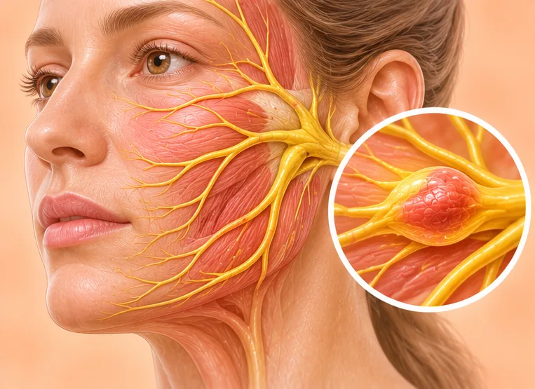

Cerebellar atrophy (shrunken cerebellum)
The cerebellum, the part of the brain for balance, gradually becomes smaller
What it is
The cerebellum sits at the back of the brain and helps with balance and smooth movement. When it shrinks, walking, hand movements and speech may become less steady.
- Back of the brain
- Can start at any age
- Unsteady, clumsy
- Which doctor
- Neurologist, family doctor
- Common in
- Older adults; some families; long-term heavy drinkers
- Contagious
- No
- Course
- Often changes slowly over years; it depends on the cause
Common signs

Unsteady when walkingUnsteady gait 
Weak, clumsy gripHand weakness 
Slurred or unclear speechDysarthria 
Room feels like spinningVertigo 
Shaking handsTremor
Why it happens

Getting olderAgeing 
Drinking alcoholAlcohol use 
Runs in the familyGenetic predisposition 
Germs (infection)Infectious cause
Other causes
- Often the cause is not known
See a doctor first if
- Face drooping, arm weakness or speech trouble that starts suddenly: call 999 now
- Sudden severe headache with vomiting or being hard to wake: go to hospital now
- A fall with a blow to the head
- Choking on food or drink, or trouble swallowing
- Balance or speech getting worse quickly over days or weeks
If any apply, please see a doctor before a session.
This page is general information. Please keep taking your normal medicine and keep seeing your doctor.
Keep taking your normal medicine and keep seeing your doctor. Our session is a gentle support and does not replace medical care.
Looking after yourself

Make the home safe from fallsFall prevention 
Cut down on alcoholAlcohol reduction
More ways to look after yourself
- Ask your doctor about a walking aid and therapy to help balance
- Eat slowly and sit upright to lower the risk of choking
Tell your therapist
- Weak leg or foot
- Numb or tingling leg or foot
- Dizzy when turning the head
- Recent neck injury or surgery
Your therapist will go through this with you before starting.
Questions and answers
What is Cerebellar atrophy (shrunken cerebellum)?
The cerebellum, the part of the brain for balance, gradually becomes smaller. The cerebellum sits at the back of the brain and helps with balance and smooth movement. When it shrinks, walking, hand movements and speech may become less steady.
What are the common signs of Cerebellar atrophy (shrunken cerebellum)?
Unsteady when walking · Weak, clumsy grip · Slurred or unclear speech · Room feels like spinning · Shaking hands
Why does Cerebellar atrophy (shrunken cerebellum) happen?
Getting older · Drinking alcohol · Runs in the family · Germs (infection)
How can I look after myself with Cerebellar atrophy (shrunken cerebellum)?
Make the home safe from falls · Cut down on alcohol
Can an AI Body Master session help with Cerebellar atrophy (shrunken cerebellum)?
A session is gentle, needle-free meridian support for your wellbeing. It does not treat or cure Cerebellar atrophy (shrunken cerebellum) and never replaces your medicine or your doctor. Tell your therapist about it before the session starts.
Related conditions
- Alzheimer's disease
- Viral meningitis
- Viral encephalitis
- Restless legs syndrome
- Stroke with bleeding (haemorrhagic infarction)
- Cluster headache
- Herpes simplex encephalitis
- Low intracranial pressure (intracranial hypotension)
- Cataract
- Seborrhoeic dermatitis (dandruff-type rash)
- Peeling lips (exfoliative cheilitis)
- Tonsil keratosis
References: General information based on public health sources such as Mayo Clinic, NHS, Cleveland Clinic and NCBI StatPearls.
Page updated: 2026-11-05